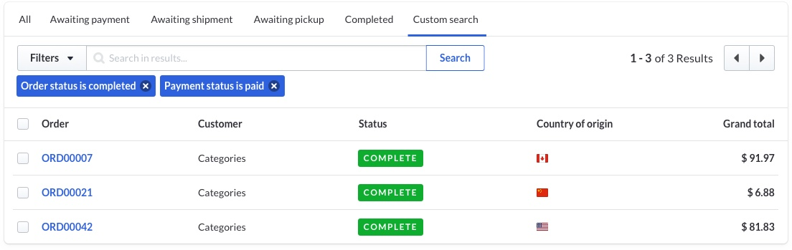
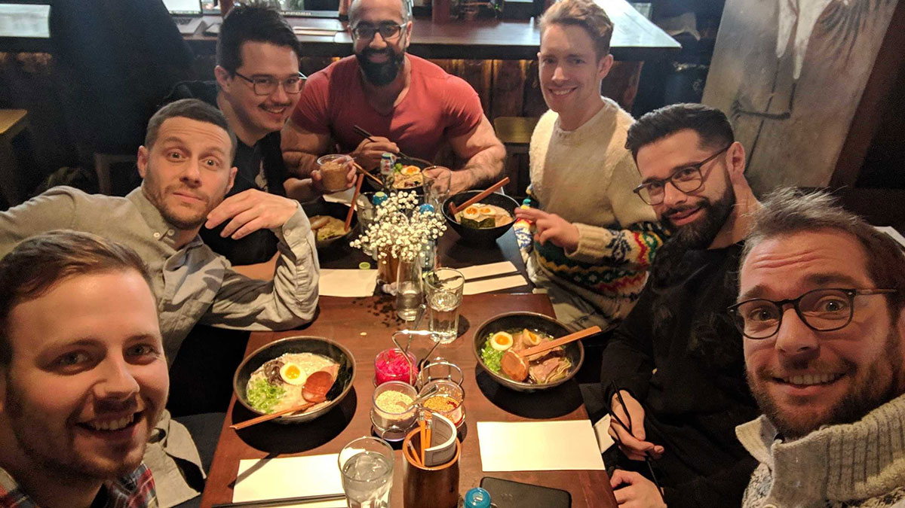
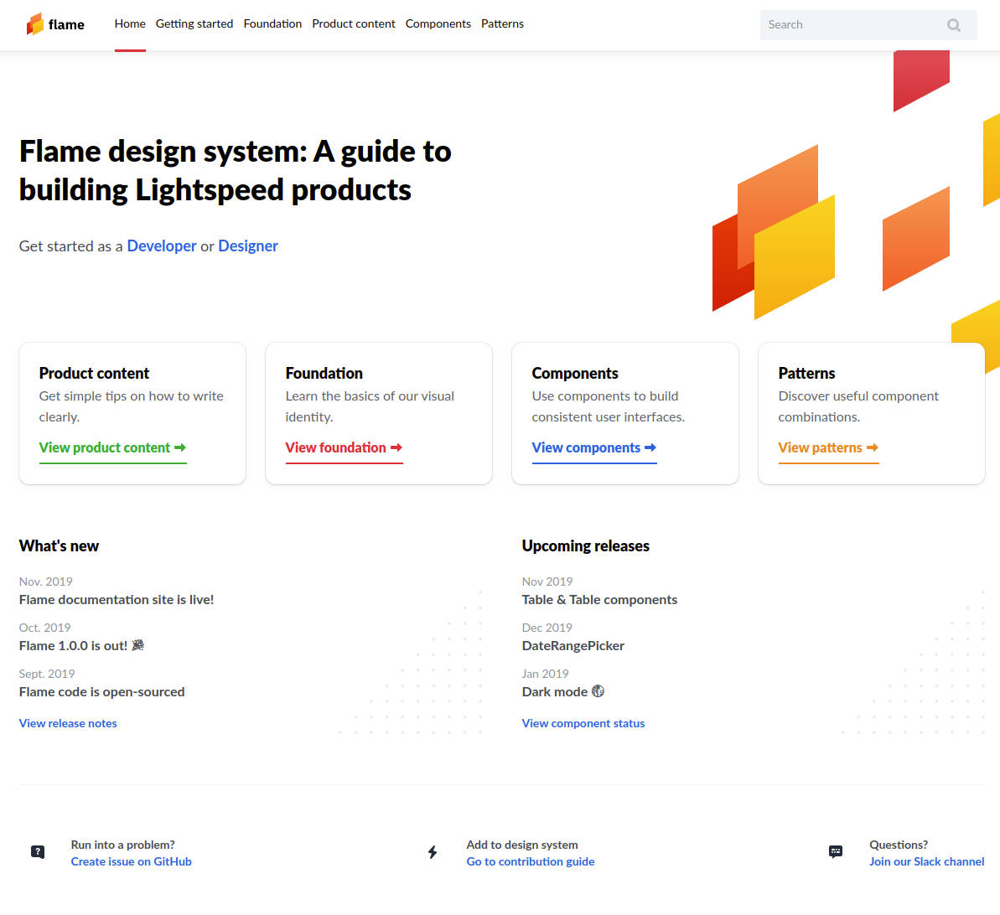
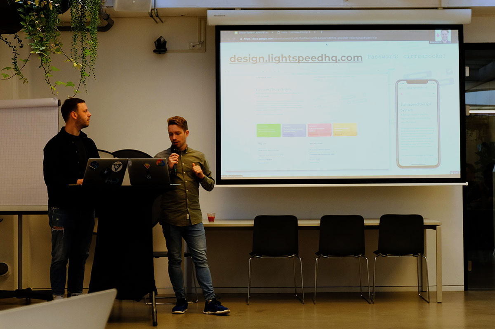

Ubisoft Connect is a transversal meta-layer which connects all players and brands under the Ubisoft umbrella.
It represents a consolidation of brands into a single unified product, available wherever Ubisoft games are.
My contributions to this project were split into two parts.
1. Multi-platform, multi-theme design system
craft many of the team's Figma components for the shared library,
ensure accessibility compliance and localization of UI components,
devise solutions for storing design tokens in a single source,
implement a single shared library for design tokens, including light & dark themes,
code engineering demos of how design tokens might be used in production code,
distribute the library of design tokens via an internal Artifactory instance,
2. Design of the Challenges feature within Ubisoft Connect
collaborate with Game Designers to come up with the app's business rules,
create flexible UI components to accomodate various challenges provided by game teams,
carefully integrate the Challenges feature within the Ubisoft Connect overlay shell,
Ubisoft Connect brings together over 250M players from across the world on PC, Xbox, Playstation, Switch, Stadia, iOS and Android.
Company: Ubisoft
Team: Ghina El-Chemali, Letícia Zancan, Maria Rundqvist, Émile Bergeron, Basile Fecourt, Roxanne Angers
Role: Product Designer, Front-End Developer
Timeline: 2019-2020
Status: in production
A Design Sytem for all devices
Name an electronic device. Someone probably tried to run a game on it. Games are ubiquitous - an idea which Ubisoft epitomizes.
Upon starting this project, it was clear that most current & next-gen devices needed to be supported by this Design System.
As most games are now played on mobile devices, light & dark modes would need to be included.
Controller modalities also had to be taken into consideration, meaning that both focus-based navigation
(common with game consoles or keyboards) and mouse/touch navigation had to be supported.
Support for many device types
Light & dark modes
Cursor & focus-based navigation
The challenges feature
Developers and designers quickly gained interest in the Design System. All designers were already using the Sketch and Framer libraries
we had created for ultra-fast UI design and prototyping.
Developers from other teams who saw value in this Design System started using it and contributing back to it. This was amazing!
Very quickly, the number of components available to us was growing due to the positive feedback loop that the team had initiated.
In an collaborative decision, the contributors decided to evolve from CSS tokens & shared styles to React.
The move React components empowered designers to bring more types of components to the Design System.
For example, I worked to automate the creation of icons from Sketch-exported SVGs to
React icon components with customizable 3-tone style.
Sample of the icon set created as React components
3. Tabular expansion
Realizing the power the Design System on one hand and some inconsistent pages in our products,
I rallied designers from each of the major 3 web products from Lightspeed to collaborate on the
design and conceptualization of a Table component: arguably the most complex component yet.
To maximize usefulness for all developers, designer and, customers,
this Table component would have to support many workflows and modalities. I led interface inventories, competitive
analyses, and many design workshops with stakeholders in order to get this right.
We agreed on a design which supported all of the features the Table should have:
listing,
search,
sorting,
filtering,
summarizing,
paginating,
and more.

Filter Table from the Flame Design System
To test out assumptions about how the Table would be understood by its users, I built a total of 9 iterations of interactive prototypes
for the Table's filtering behaviour. This test was massively successful in identifying the wins and flaws of the table.
As I was building the prototype, I learned how to use anonymous functions with map and filter,
fetch mock data from the network, optmize rendering, and write modular single-resposibility code.
I am very pleased that the Table is now an integral part of the Design System and in use by all product teams.
4. Birth of a team
After a year and a half of building the Design System in a distributed way, I wanted to further increase the velocity and quality of the
Design System. I pitched to key stakeholders the idea that the company should invest in a dedicated team for the Design System.
I put together a presentation outlining the benefits of spending dedicated resources to internal tooling. By attaching a dollar
value to the potential benefit of having a dedicated team, I was able to convince senior management to pull together people from existing
teams and new hires to form the Design System team. We are (at time of writing) 4 developers and 2 designers. I fall into the latter, and also was bestowed
the responsibility of being Product Manager. This has been a huge challenge for me, as I have never received training on how to be a Product Manager.

The Lightspeed Design System team enjoying some Ramen 🍜
5. Hardening and evangelizing
With a newfound team and hopeful hearts, the team transitioned from working on the Design System as an "innovation time" project
to treating it like a product. Our first initiative was to improve the developer experience of using the Design System. This meant
moving from CSS tokens and webpack configs to CSS-in-JS (using styled system) and distributed builds for the React Components.
The improvements were significant.
From a previously difficult-to-navigate experience which might take a mid-level front-end developer 2 hours to set up, we moved to a way of working
that required less than 2 minutes to set up.
The team now offered an easy-to-use solution for installation and usage of our UI components.
Gap analysis showed that our stakeholders (designers, developers, product managers, quality specialists)
were being provided with very little guidance as to how, when, and why to use each component. This was to be our
next leap forward as a product. I teamed up with the other designer on the team to design, develop, and launch a comprehensive
documentation site for the Design System to boost understanding and context of the tools we were providing.
After working for about 2 months continuously, the MVP for our site was done. By launch, it contained:
Component documentation including example usage, copy guidelines, code playground, and API documentation,
Pattern documentation for high-level components and component compositions.

Landing page for the Lightspeed Flame Design System
Creating the site was not enough. Lightspeeders needed to know what it was, why it was good for them, and how to access it.
With that in mind, I organized and held 2 "lunch-and-learn" events at Lightspeed offices (in Amsterdam and Montreal)
to properly launch the Design System Documentation website. This launch resulted in a 60% increase in visits to the site week-over-week
from the previous soft-launch initiatives.

Launching the Design System in Amsterdam
If you're still reading, I think you deserve a visit
to the Design System site.
The URL from the slide above is for internal use only.